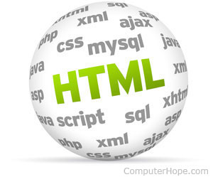

What is Oxygen XML Editior
The Oxygen XML Editor (styled <oXygen/>) is a multi-platform XML editor, XSLT/XQuery debugger and profiler with Unicode support.
Release cycle
Oxygen XML has three types of releases, not counting betas or development versions. Major releases, such as 17 as of the end of 2015, occur on average once per year. Minor releases, 17.1 as of the end of 2015, are made at least once a few months after a major release, occasionally twice a year. Incremental build releases are provided on an as needed basis, usually in response to either bugs or security issues. Build numbering is based upon the date and time (to the hour) of the build. As of the end of 2015 the current full version and build number is "oXygen XML Editor 17.1, build 2015121117" with a full release history available online.
XML editing features
Oxygen XML offers a number of features for editing XML documents. Documents can be checked for proper XML form. They can also be validated against a schema. For validation purposes, the documents can be validated against DTD, W3C XML Schema, RELAX NG, Schematron, NRL and NVDL schemas. The editor can also validate the XML as it is entered. For additional schema types, a validation scenario can be generated, which allows oXygen to call out to arbitrary programs to perform validation. Also, the program has support for XML catalogs. An XML catalog is an XML file of a specific format that maps a schema definition string to an actual file name on the disk or web. Using catalogs allows the user to specify a web address for a schema, but allows oXygen to find a file form of the address if the catalog specifies one. Oxygen XML comes with schemas and DTDs for popular or major XML and XSL formats including DocBook (versions 4.0 and 5.0), TEI format, XSLT (versions 1.0, 2.0 and 3.0), DITA, XHTML and HTML 5. Extending to new XML dialects or specialisations is achieved by adding the relevant framework or implementation to the software or loading the document type or schema, thus enabling an adaptable environment which is itself configured entirely by XML, which draws parallels with Emacs and its ability to edit itself while implementing the Lisp dialect it runs in. The program is aware of XInclude, and all validation and transformation services can follow the XInclude statements to their included files. Oxygen XML offers three views designed for editing XML documents. These views are text, grid, and author.
Text view
The text view is the default view for editing an XML document. As the name suggests, this view shows the XML text as text. For documents that are associated with an XML schema, Oxygen XML offers tag completion. Oxygen XML can use a number of XML schema languages, including DTD, W3C XML Schema, RELAX NG (both compact and full). Both W3C XML Schema and RELAX NG schemas can include embedded Schematron rules. It also can use the NRL and NVDL routing languages, which allow multiple schemas of different types to be applied to different files. In addition to tag completion, annotations in the schema will be displayed as tooltips for the elements that those annotations apply to. For schema formats that do not have a standard mechanism to bind the schema to the XML file, Oxygen XML provides a processing instruction that instructs the program as to which schemas to use. For documents that do not have a schema, Oxygen can analyze the structure of the document and generate a schema.
Grid view
The grid view shows the XML document in a spreadsheet-like fashion. The left-most column shows the elements, including comments and processing instructions, at the root level. The next column shows attributes of root elements, and every unique first child of the root XML element. If the root element has six children all named "section", then the grid view will show only one section element and a notation that there are six of them. This iteration continues for the next column. This view is not often useful for HTML or other document-like formats, but it can be useful for certain XML formats that resemble spreadsheets. With the exception of spaces, this view shows the entire structure of the XML file. All of the textual information in the file will be presented in this view.
Author view
New to Oxygen XML v9.x was an author view providing a WYSIWYM view of the XML document. This smaller version of the Editor, called oXygenXML Author, is provided as a cheaper option in the commercial options where the full feature set may not be required. Author is centered on general XML document editing.[4] This view is based on providing a CSS file for the document that specifies the data type for each element in the document's schema. Oxygen XML comes with document CSS files for formats like DITA, DocBook, and TEI. XML tags and attributes in this view can be completely disabled or can be shown in various combinations. Editing in this view is an intermediate step between true WYSIWYG and editing in the regular text view in terms of complexity for the author. The XML elements are made more human-readable and intuitive, but the nesting and semantics of the XML document are still clear. The cursor can be placed between any elements, and when the cursor's position is ambiguous, a tool-tip window will appear showing a local view of the XML tree and the cursor's position in it. A bar along the top of the view shows the list of elements from the document root to the element under the cursor. XML elements are never implicitly inserted into the document. However, a common action in editing document-like XML files is to create a new element of the same name following the current one. The author view will perform this operation if the user presses the enter key twice (pressing it once brings up a dialog of possible elements to add, if tag competition is available). Inserting elements can be done through oXygen's XML refactoring commands to insert an element at the current cursor location. Even if XML tags are set to be non-visible, an indication for an empty element is always displayed using that element's name. Attributes on XML elements cannot directly be edited. However, Oxygen XML does have an attribute panel that, when content completion information is available, can be used to both see and set the value of attributes on the current element.